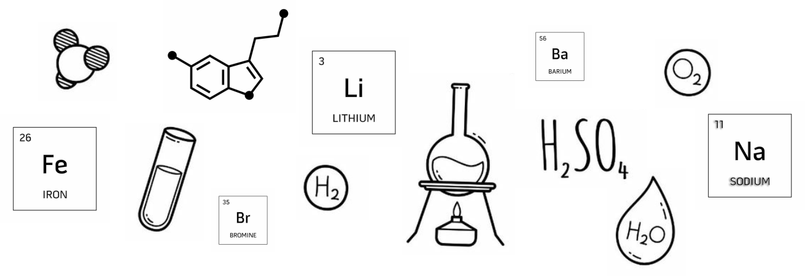
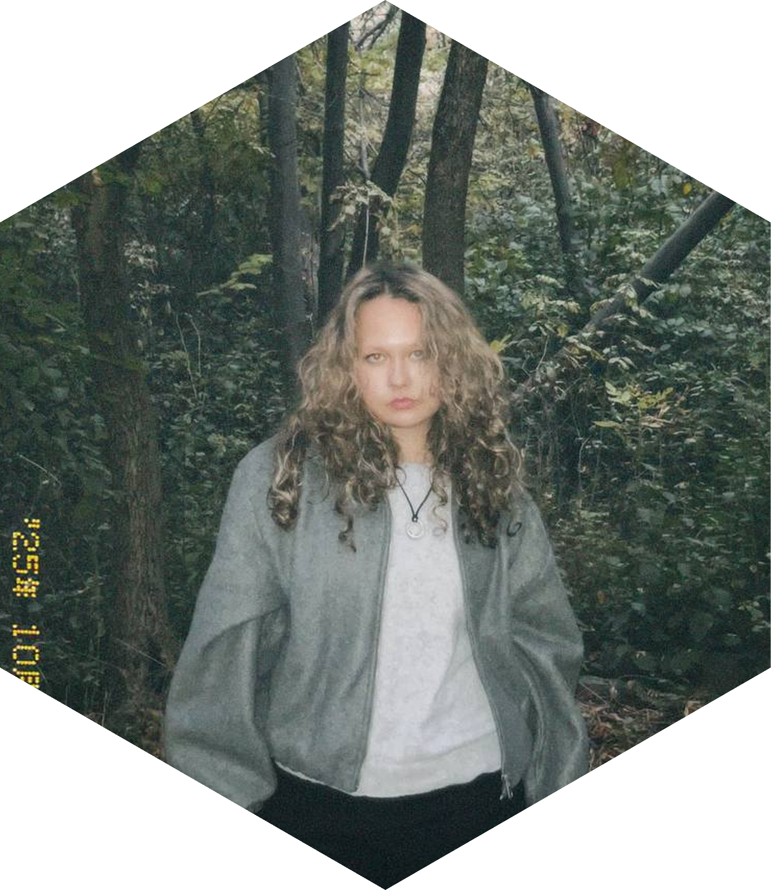

ШКОЛЬНОЕСАМОУПРАВЛЕНИЕ
«Где есть инициатива учеников — там есть будущее школы»
«Где есть инициатива учеников — там есть будущее школы»
— это активная ученическая организация, которая помогает каждому ребёнку проявить лидерские качества, инициативность и ответственность.


Президентом школы-гимназии #1 является Кусаева Айша. Выборы президента проходят ежегодно в октябре, что позволяет каждому ученику принять участие в демократическом процессе.

Кусаева Айша Серикқызы
Президент школы-гимназии #1
“Лидерство — это способность превращать трудности в возможности”
ученики разрабатывают и реализуют социально значимые проекты: благотворительные ярмарки, экологические акции «Таза Қазақстан», дебатные турниры, челленджи по ЗОЖ и патриотические мероприятия. Каждый проект направлен на развитие лидерства, ответственности и командной работы. Совет учеников тесно сотрудничает с администрацией и педагогическим коллективом, принимает участие в планировании школьных мероприятий. Родители активно вовлекаются в проекты, поддерживают инициативы детей и помогают в их реализации, что формирует единую школьную семью.